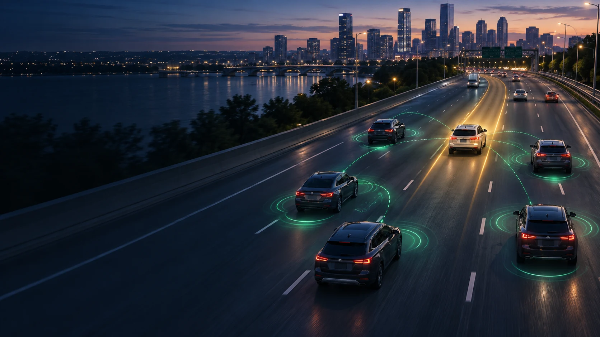
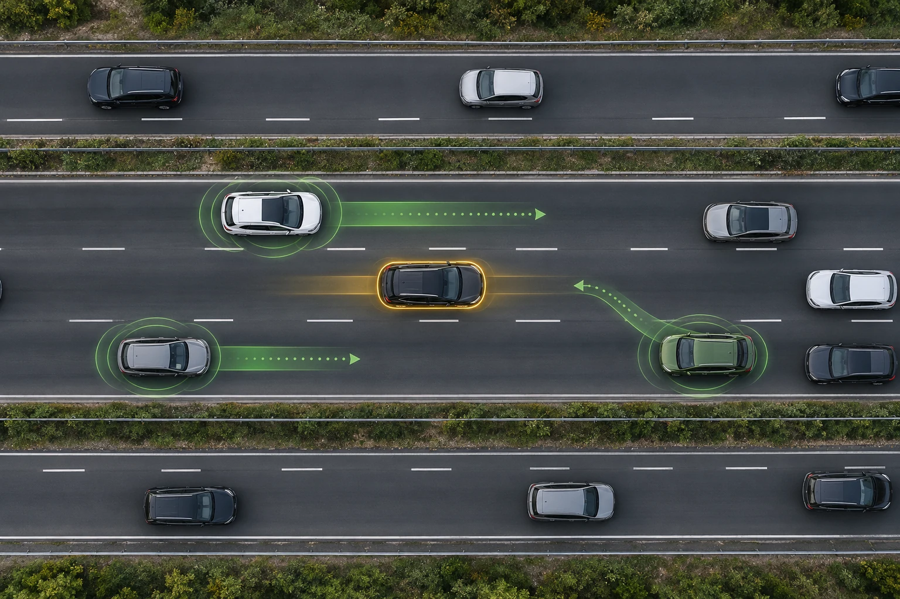

1
Request
A priority participant submits a destination, urgency level, desired time saving, and spending limits.

The Transactional Traffic Mediator is a proposed coordination layer that identifies safe, lane-level micro-maneuvers, offers individualized rewards to participating vehicles, verifies that each action happened, and settles value only after successful completion.
Navigation software can suggest a faster route, but it normally treats the vehicles around us as passive obstacles. It cannot ask nearby participants to safely create and preserve the precise gaps needed for a vehicle to pass.
This concept introduces a voluntary marketplace and control layer for small traffic actions: create a gap, hold position, delay a merge, move into an available space, or yield when safe.

Five connected stages turn a general need to move into a set of specific, voluntary, and verifiable micro-maneuvers.
A priority participant submits a destination, urgency level, desired time saving, and spending limits.
The platform identifies nearby participants and calculates a safe sequence of lane-level actions that can create a temporary corridor.
Each assisting participant receives an individualized offer and may accept, reject, or counteroffer.
Positioning, ranging, vehicle telemetry, cameras, radar, lidar, or V2X data can confirm that the accepted maneuver occurred.
Compensation or credit is released only after the system verifies successful completion.
The concept centers on a verified, multi-vehicle marketplace for specific physical actions at lane level.
Different participants can receive different, coordinated assignments that together open one temporary corridor.
Offers may reflect a vehicle's position, inconvenience, expected delay, maneuver complexity, urgency, supply, and demand.
Acceptance alone is not enough. The system is designed to confirm physical performance before releasing compensation.
Credits or tokens can accrue from verified events and settle later, reducing friction during split-second coordination.
Instructions remain subject to safe conditions, participant discretion, traffic laws, and vehicle safety systems.
The architecture can support phones, vehicle displays, assisted-driving systems, fleets, connected vehicles, and autonomous vehicles.
The disclosed system can combine multiple communications, sensing, and interface technologies without depending on a single implementation.
The Transactional Traffic Mediator is the subject of U.S. Utility Patent Application No. 19/714,615, filed June 21, 2026.
The application describes systems and methods for generating, pricing, assigning, verifying, and compensating coordinated lane-level micro-maneuvers, including embodiments for human-driven, assisted, connected, and autonomous vehicles.
Inventor: Benny Goldstein
Benny Labs Foundation welcomes conversations with researchers, mobility platforms, automotive suppliers, fleets, infrastructure partners, and prospective licensees.
Start a conversation →